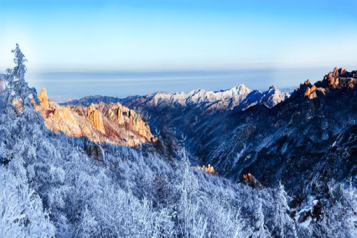
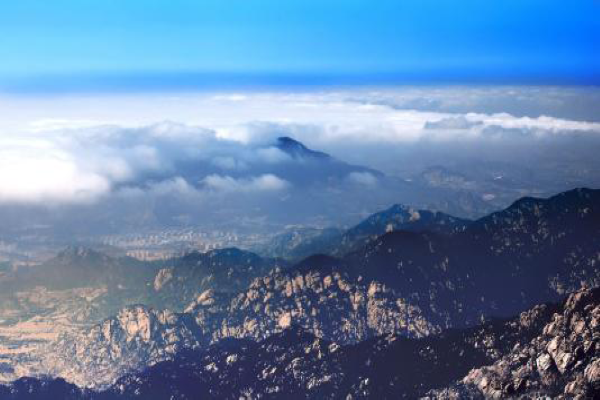
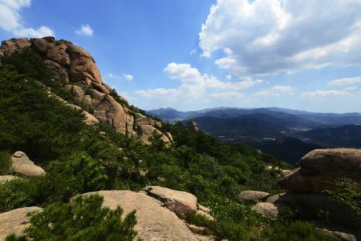

崂山景区
时间：2019/11/11

【历史简介】
崂山景区包括太清宫、太平宫、北九水、华楼宫、鹤山和崂顶巨峰等景区与景点。奇峰怪石，满山遍布，如狮子峰、绵羊石等。人称峻山的石峰是“天然的花岗岩群雕”。由于临海，山色海波相映，形成了紫霞云海乃至“海市蜃楼”的奇特景象。 再加上闻名天下的崂山泉水，如“金液”、“靛缸湾”等，构成了崂山独具一格的自然景观，如《齐记》所云：“泰山虽云高，不如东海崂。”
【景区简介】
崂山景区为国家级风景名胜区、国家AAAAA级旅游景区、国家级森林公园、爱国主义教育基地。 崂山古称牢山、劳山。坐落在山东半岛的东南，西靠青岛，东南两面濒临黄海。面积386平方公里，崂顶巨峰，海拔1，133米。既是中国道教名山，又是著名的避暑游览胜地。
崂山自古被称为“神宅仙窟”、“海上仙山第一”。秦皇汉武都曾来此求仙。宋元以来，宫观次第兴建，最盛时达“九宫八观七十二庵”。今尚存太清宫、太平宫、华楼宫等。这些建筑多为石壁瓦舍，简朴无华，具有道家冲和恬淡的色彩。其中太清宫中的汉柏唐榆至今仍蓊郁葱青。 历代名道如邱处机、张三丰，文人李白、苏轼、蒲松龄等都曾来山中-或漫游，多有题刻吟咏，为奇丽的山水增添了几分文秀。